Carregando…
Carregando modelos…
Letra
—
sem leitura
Soletrando
Sorria para confirmar a letra e somá-la à palavra.

tudo roda nesta máquina
Carregando modelos…
sem leitura
Sorria para confirmar a letra e somá-la à palavra.